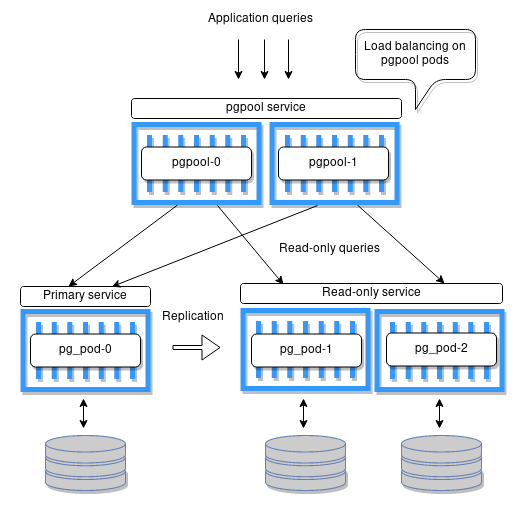

High-availability for PostgreSQL in OpenShift
Objectives
- get familiar with Linux containers, and OpenShift
- explore and compare existing solutions that offer HA for PostgreSQL database
- design and implement container images based on Fedora OS
- implement an operator managing cluster setup and failover autonomously
- prepare stress-tests with simulated crashes, and demonstrate automatic failover in the OpenShift environment
Kubernetes
Kubernetes is an open-source container-orchestration system for automating application deployment, scaling, and management.

The key features of Kubernetes
- high-availability
- load balancing
- auto-scaling
- rolling update or rollback
- resource monitoring and logging
- self-healing
OpenShift
OpenShift is an open source container application platform by Red Hat based on Kubernetes. It Provides additional security policies, enteprise support, image streams, console UI and more features.

Operators
A Kubernetes Operator is a method for application deployment that extends the capabilities of Kubernetes to manage more complex, stateful workloads. Examples of these workloads include databases and distributed systems.
HA for PostgreSQL
Many approaches and options, critical attributes of the technology:
- easy setup
- scale a number of replicas
- ability to survive restarts

Selected technologies
- Operator Framework for operator development
- Repmgr for replication
- repmgrd daemon for automatic failover
- Pgpool-II for load balancing and connection pooling
HA cluster design
API example
1 apiVersion: postgresql.openshift.io/v1
2 kind: PostgreSQL
3 metadata:
4 name: example-postgresql
5 spec:
6 managementState: managed
7 nodes:
8 node-one:
9 image: mcyprian/postgresql-10-fedora29:1.0
10 priority: 100
11 resources:
12 limits:
13 memory: 500Mi
14 cpu: 200m
15 requests:
16 memory: 256Mi
17 cpu: 100m
18 storage:
19 storageClassName: local-storage
20 size: 256Mi
21 node-two:
22 image: mcyprian/postgresql-10-fedora29:1.0
23 priority: 80
24 storage:
25 storageClassName: local-storage
26 size: 256Mi
27 node-three:
28 image: mcyprian/postgresql-10-fedora29:1.0
29 priority: 60
30 storage:
31 storageClassName: local-storage
32 size: 256Mi
Operator demo
Failover demo
Test environment
- a PostgreSQL cluster managed by the operator
- Pgpool-II proxy containers
- two replicas of a simple web-based application
Test scenario
- a fresh test environment is initialized
- a test_timestamps table is created in test a database
- the reader and writer scripts are started
- corruption of the volume mounted to the primary node is simulated
- the failover process is monitored until writes to the new master start to succeed
- the downtime is measured based on the reader and writer logs
Test results
| cluster size | reconnect interval | write downtime | read downtime |
|---|---|---|---|
| 2 | 6 x 10 s | 66 s | 4 s |
| 3 | 6 x 10 s | 71 s | 5 s |
| 2 | 4 x 10 s | 48 s | 0 s |
| 3 | 4 x 10 s | 52 s | 0 s |
| 2 | 4 x 7 s | 40 s | 0 s |
| 3 | 4 x 7 s | 43 s | 4 s |